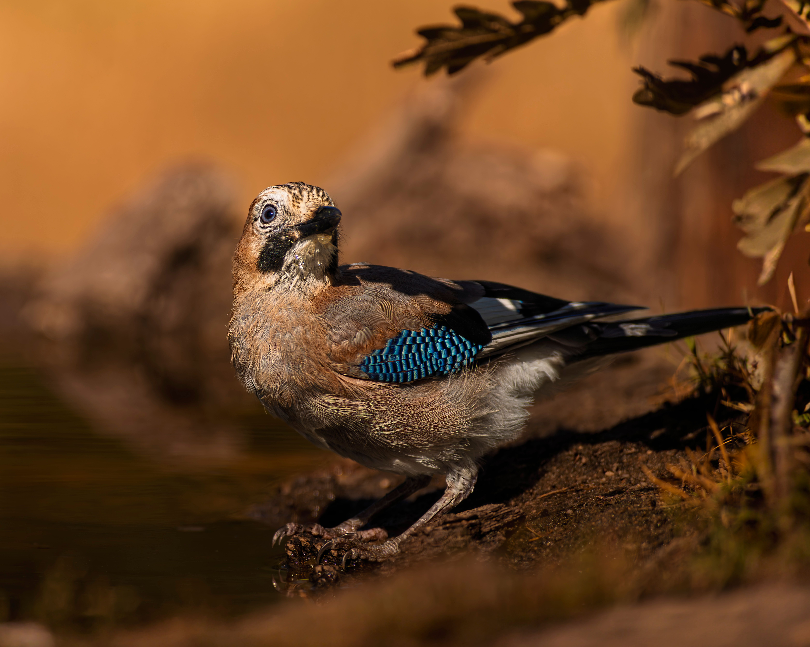

The Eurasian Jay is a colorful member of the crow family, with pinkish-brown plumage, a black-and-white face, a pale rump, and a striking blue-and-black barred patch on the wings. It is primarily a woodland bird but also occurs in parks, large gardens, farmland, and other areas containing mature trees. Jays are intelligent and adaptable birds with a varied diet that includes acorns, insects, fruits, seeds, eggs, and small animals. They are particularly important in the dispersal of oak trees because they carry acorns away from parent trees and bury them for later use. Compared with the Eurasian Magpie, the Jay is shorter-tailed and more compact, with much more colorful brown, blue, and black plumage. It differs from the Western Jackdaw by its larger size, pinkish-brown body, and blue wing panel. Jays are often heard before they are seen because of their loud, harsh calls.